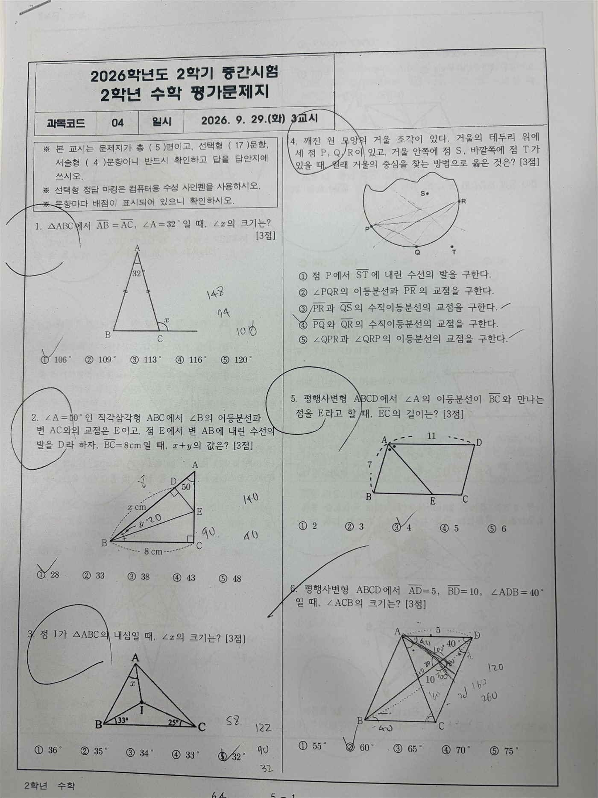
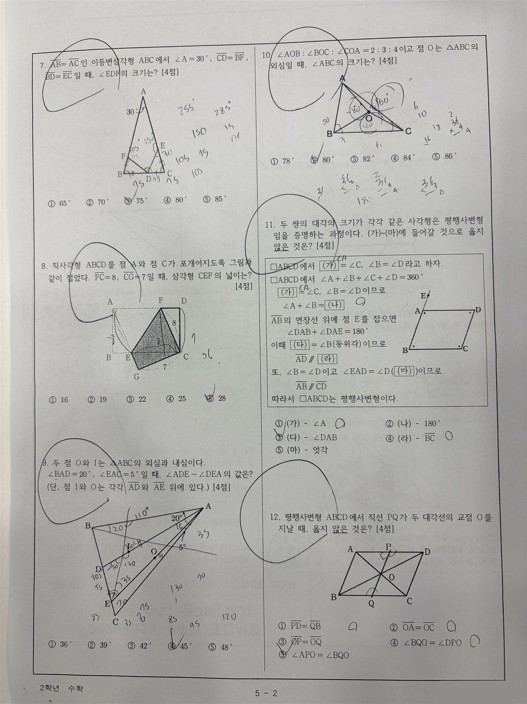
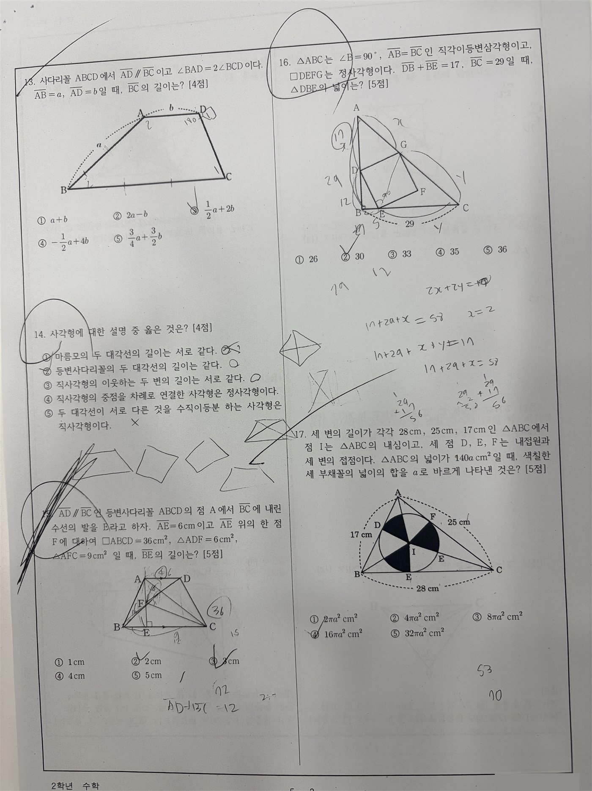
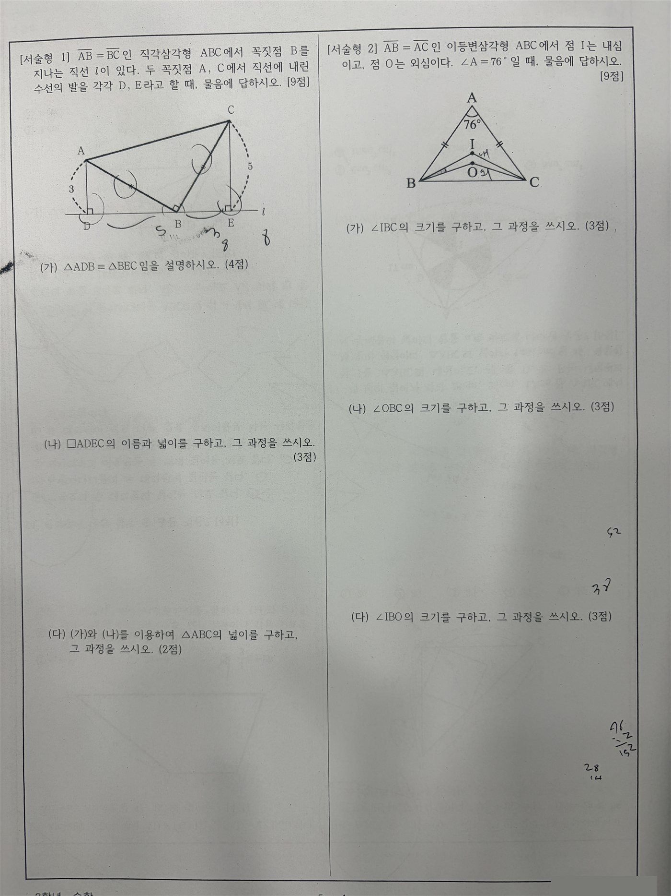
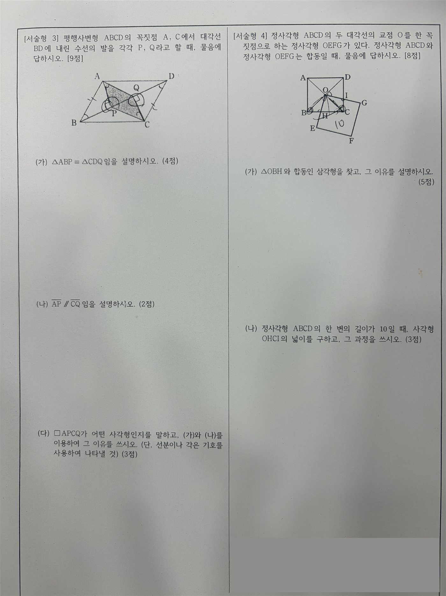

DAY 02수학학원 AI 활용 특강
시험지 분석을 채점·보충 자료로
시험지 분석표를 "보는 표"에서 끝내지 않고, 실제 수업 자료로 바꿉니다. 서술형 모범 답안과 부분 점수 채점 기준을 만들어 학생 풀이에 적용해 보고, 유사 문제를 만들어 직접 풀어 확인한 뒤, 학생 한 명의 오답으로 보충학습 계획까지 세웁니다.
1.오늘의 수업
AI를 학원 업무에 써 보려는 수학학원 원장님·강사님 (지난 시간에 빠지셨어도 괜찮습니다)
대표 문항 몇 개를 깊게 → AI 초안 → 선생님이 확인하고 고치기
AI가 무엇을 만들었는지보다, 선생님이 무엇을 확인하고 고쳤는지를 남기기
Claude (claude.ai, 유료 계정) — 프로젝트 "우리 학원 자료실"
따로 없음 — 시험지 사진과 오늘 쓸 자료(기본 분석표 · 가상 학생 풀이 · 오답 사례)는 이 페이지에 모두 있습니다.
2.오늘 배우는 내용 & 전체 흐름
오늘 가져갈 세 가지
3.모두 같은 출발점에서 시작하기
오늘은 지난 시간에 오셨든 처음 오셨든 같은 기본 분석표에서 시작합니다. 강사가 확인한 표를 함께 쓰면, AI가 도형을 잘못 읽어 생긴 차이 없이 모두 같은 문항 번호와 같은 내용으로 실습할 수 있습니다.
- 1Claude → 프로젝트 "우리 학원 자료실" 열기
- 2프로젝트 안에서 새 채팅 열기
- 3아래 "기본 분석표 붙여넣기"를 입력
- 1claude.ai → 왼쪽 메뉴 프로젝트 → 새 프로젝트, 이름 "우리 학원 자료실"
- 2프로젝트 지침 칸에 아래 "프로젝트 지침" 붙여넣기
- 3아래 시험지 A 다섯 쪽을 내려받아 파일 추가로 한 번에 올리기
- 4프로젝트 안 새 채팅에서 "기본 분석표 붙여넣기" 입력
메뉴 이름과 위치는 업데이트에 따라 조금씩 다를 수 있습니다.
지난 시간 핵심 — 이것만 기억하면 오늘 따라올 수 있어요
- 요청 4칸 — 목적(무엇을 하려는지) · 자료(무엇을 보고) · 기준(어떤 기준으로) · 결과 형식(어떤 모양으로)
- 모르면 표시 — "모르는 건 추측하지 말고 '확인 필요'라고 표시해줘"를 붙입니다
- 그림은 글로 먼저 — AI는 도형의 각도·길이를 자주 잘못 읽습니다. 그림 정보를 글로 옮기게 하고 사람이 확인한 뒤 분석합니다
실습 자료 — 시험지 사진
오늘 실습은 시험지 A(중2)로 진행합니다. 요청문의 문항 번호가 모두 시험지 A 기준이에요. 프로젝트에 이미 올려 두셨다면 다시 올리지 않아도 됩니다. 시험지 B(고2 미적분)는 고등부 선생님이 학원에 돌아가 같은 요청을 해 볼 때 쓰세요. 사진을 누르면 크게 볼 수 있어요. 수업 실습용 자료이므로 다른 곳에 올리거나 나눠 주지 않습니다.
시험지 A · 중학교 2학년 수학 (2학기 중간, 선택형 17 + 서술형 4)










시험지 B · 고등학교 2학년 미적분


이제 모두 같은 표를 붙여넣습니다. 표는 맨 아래 15번 준비 자료 ①에 있습니다. 복사해서 아래 상자의 [ ] 자리에 붙여넣은 뒤 입력하세요.
확인 — 21문항, 배점 합계 100점이라고 답하면 준비 끝입니다. 지난 시간에 직접 만든 표가 있어도 오늘은 이 표를 씁니다. 내 표와 다른 곳이 있다면, 그 문항이 AI가 잘못 읽었던 곳일 가능성이 큽니다.
4.실습: 대표 문항 깊게 보기
실습 01
21문항 전체에 열을 계속 붙이는 대신, 대표 문항 세 개만 깊게 봅니다. 오늘은 3번(내심), 7번(합동), 서술형 3번(평행사변형)을 함께 봅니다. 서술형 3번은 다음 실습의 채점 기준으로, 3번은 유사 문제로 이어집니다.
바꿔 보기 — 처음 한 번은 그대로, 다음엔 내 관심 문항으로
예: "9번, 10번" (외심·내심) · "서술형 2번" (내심·외심 서술형) · "15번" (5점 고배점)
- · 난이도는 우리 학생들 수준과 진도에 따라 달라지는 "판단"입니다
- · 그림을 잘못 읽으면 난이도도 같이 틀어집니다
필요한 개념, 풀이 단계, 막힐 지점을 AI가 모으면, 선생님은 그것을 보고 우리 반 기준으로 빠르게 판단합니다.
결과를 보며 확인하기
- 그림 정보가 시험지와 같은가? (3번: ∠IBC = 33°, ∠ICB = 25°)
- "막힐 지점"이 실제로 우리 학생들이 막히는 곳과 비슷한가?
- 난이도 초안에 동의하지 않으면 — "7번은 우리 반 기준 '상'이에요. 이유: [ ]. 이 기준으로 다시 정리해주세요."
5.실습: 서술형 모범 답안과 채점 기준
실습 02
서술형은 단계마다 부분 점수를 어떻게 줄지 정하는 데 시간이 걸리고, 선생님마다 기준이 달라지기 쉽습니다. AI에게 채점 기준표의 틀을 먼저 받고, 선생님은 확인하고 고치는 데 집중합니다. 오늘은 서술형 3번(9점 = (가) 4점 · (나) 2점 · (다) 3점)으로 합니다.
모범 답안은 반드시 선생님이 직접 풀어 확인
AI의 수학 풀이는 그럴듯해 보여도 틀리는 경우가 있습니다. 특히 도형 문항은 그림을 잘못 읽으면 풀이 전체가 어긋납니다. AI가 맡는 것은 채점 기준표의 틀과 문장이고, 정답과 점수 배분의 최종 판단은 선생님이 합니다. 여기서 만든 기준은 학원에서 쓰는 초안이며, 학교의 공식 채점 기준이 아닙니다.
검토하며 고치기
- 점수 합이 소문항 배점과 같은가? (4 + 2 + 3 = 9점)
- (가)에서 합동 조건의 근거(직각, 대변, 엇각)마다 점수가 나뉘어 있는가?
- 내 기준과 다른 곳은 그 부분만 짚어서 고치기 — "(다)는 사각형 이름 1점, 이유 2점으로 바꿔주세요."
6.실습: 학생 풀이에 채점 기준 적용하기
실습 03
채점 기준은 표로 만들 때보다 실제 풀이에 대 볼 때 빈틈이 드러납니다. 특히 "결론은 틀렸지만 접근은 맞는 풀이"에서 선생님의 기준이 분명해집니다. 가상 학생 두 명의 풀이(15번 준비 자료 ②)로 해 봅니다.
먼저 생각해 보기학생 C의 (다)는 "직사각형"이라고 답했습니다. 근거는 맞게 썼는데, 몇 점을 줄까요?생각 정리 보기
정답은 없습니다. 선생님마다 다르게 볼 수 있고, 그래서 미리 정해 두는 것이 중요합니다. 예를 들어 "사각형 이름이 틀리면 이름 점수만 빼고, 근거(AP = CQ, AP ∥ CQ)를 맞게 썼으면 근거 점수는 준다"처럼 정할 수 있습니다.
이렇게 정한 내용을 채점 기준에 한 줄로 추가하면, 다른 선생님이 채점해도 같은 점수가 나옵니다.
이렇게 쓰면 좋아요 — 선생님 회의 전에 이 기준표를 돌려 보고 통일하면, 반마다 채점이 달라지는 일이 줄어듭니다.
7.실습: 유사 문제 설계하기
실습 04
지난 시간에는 "3번과 같은 개념의 문항 찾기"를 했습니다. 오늘은 한 걸음 더 — 없으면 만듭니다. 다만 바로 "비슷한 문제 만들어줘"라고 하지 않고, 무엇을 남기고 무엇을 바꿀지 선생님이 먼저 정합니다. 오늘은 3번(내심, 각의 크기)으로 합니다.
도형 문제는 숫자 하나만 바꿔도 성립하지 않을 수 있습니다
예를 들어 3번에서 ∠IBC와 ∠ICB를 너무 크게 바꾸면 세 내각의 합이 180°를 넘어 삼각형이 만들어지지 않습니다. 그래서 다음 실습에서 성립하는지 검산을 함께 요청하고, 마지막에는 선생님이 직접 풉니다.
8.실습: 유사 문제 만들고 직접 풀어 검증하기
실습 05
여러 개보다 검증한 1개가 목표입니다. 학생에게 나가는 문제는 정답이 틀리면 안 되기 때문입니다.
해설을 보기 전에 선생님이 먼저 풀기
- 종이에 직접 풀어 정답이 AI 정답과 같은가?
- 그림 설명대로 실제로 그릴 수 있는 도형인가?
- 보기 다섯 개 중 정답이 하나뿐인가? (계산 실수로 나올 만한 오답이 보기에 들어 있으면 더 좋은 문제)
- 설계에서 정한 개념만으로 풀리는가?
틀린 곳이 있으면 — 그 부분만 짚기
- · "정답이 35°가 아니라 32°로 나옵니다. 해설 2단계를 다시 확인해주세요."
- · "보기 ③과 ④가 둘 다 답이 될 수 있습니다. 보기를 고쳐주세요."
- · "검증이 끝난 문제와 해설을 Word 파일로 만들어주세요." (파일로 받기)
9.실습: 학생 오답 → 보충학습 계획
실습 06
틀린 문항 번호만 주면 AI는 "약할 수 있는 곳"만 알 수 있습니다. 왜 틀렸는지(개념 혼동 · 계산 실수 · 시간 부족)는 풀이를 본 선생님이 알려 줘야 합니다. 같은 오답이라도 원인에 따라 보충 방법이 완전히 달라지기 때문입니다. 가상 학생 A의 오답 사례(15번 준비 자료 ③)로 해 봅니다.
이어서 요청해 보기
- · "이 계획을 학부모님께 상담 때 말씀드릴 내용으로 3줄 정리해주세요. 전문 용어 없이요."
- · "복습 순서를 2주 일정표로 나눠주세요. 한 번에 30분 기준으로요."
10.결과물 정리하고 요청문 저장하기
오늘 만든 세 가지를 한 파일로 모아 둡니다. 그리고 다음 시험이 끝났을 때 그대로 쓸 수 있게 요청문을 저장합니다.
파일이 만들어지지 않으면 결과를 복사해 한글·워드에 붙여넣어도 됩니다.
11.더 해 보기 (선택)
필수는 아닙니다. 시간이 남거나 학원에 돌아가서 골라서 해 보세요.
추가 요청 5가지 클릭해서 펼치기 ▾접기 ▴
12.다음 시간 준비 — 닷홈 회원가입
PART 1 → PART 2
지금까지는 학원 안의 일을 AI로 다뤘습니다 — 시험 분석 → 채점 기준 → 보충 자료.
다음 시간부터는 학원 밖으로 알리는 일입니다. 우리 학원의 수업 방식과 강점을 웹페이지(3회차), PPT·안내문·SNS(4회차)로 표현합니다. 오늘 만든 "채점 기준과 맞춤 보충 자료로 관리한다"가 그대로 홍보의 재료가 됩니다.
DAY 03에서는 만든 홍보 페이지를 인터넷에 올립니다. 수업 시간을 아끼기 위해 회원가입은 미리 해 옵니다.
- 닷홈(dothome.co.kr) 회원가입 — 본인 인증이 있으니 휴대폰을 준비하세요
- 아이디와 비밀번호를 기억해 두기
- (해 오면 좋음) 학원 소개 메모 — 학원명, 대상 학년, 대표 과정, 특징 2~3개, 상담 방법
무료 호스팅 신청과 파일질라(FileZilla) FTP 연결은 수업 시간에 함께 합니다.
13.오늘의 결과물
14.오늘의 핵심 & 다음 수업
핵심 — AI가 무엇을 만들었는지보다, 선생님이 무엇을 확인하고 고쳤는지가 결과물의 품질을 정합니다.
DAY 03 — 학원 홍보 랜딩페이지 제작
Claude로 학원 홍보용 1페이지 웹사이트를 만들고, 파일질라로 닷홈에 올려 내 휴대폰으로 열어 봅니다. 닷홈 회원가입을 꼭 해 오세요.
15.준비 자료 (복사용)
오늘 실습에 쓰는 자료입니다. 상자의 복사하기를 눌러 해당 실습의 [ ] 자리에 붙여넣으세요. ②와 ③은 수업용 가상 자료입니다.